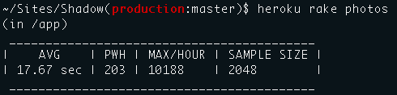

Above Photography wanted to be able to easily create different-sized thumbnails in the future. A custom language allows us to easily set up new sizes, set options, and specify the name:
{% highlight ruby %} Original.find(key).compress(70).resize(270, 167).to(:fit).watermark.save(:medium) {% endhighlight %}Heroku, our web host, allows us to process up to 50 photos at a time. At first, Shadow took about 30 seconds to process each photo, but just a few easy changes allowed us to cut this in half — we’re now processing over 10,000 photos per hour.
